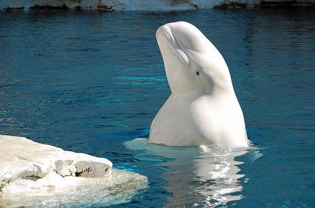
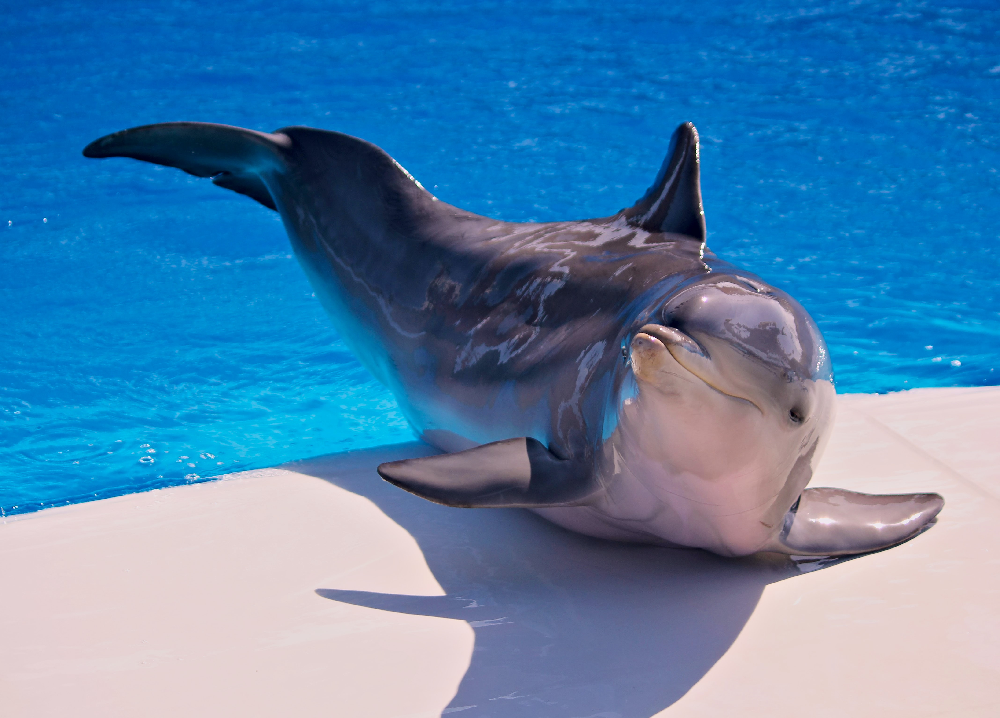
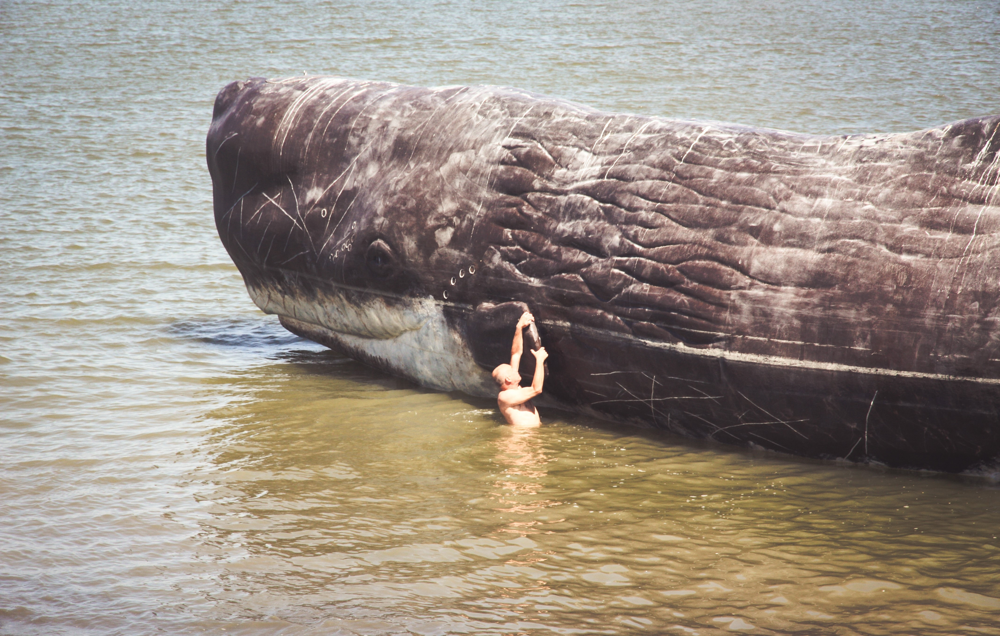

Types of Whalenders

The beluga whale is an Arctic and sub-Arctic cetacean. Belugas are extremely sociable mammals

Dolphin is the common name of aquatic mammals within the
infraorder Cetacea
 The killer whale or orca is a toothed whale belonging to the
oceanic dolphin family, of which it is the largest member
The killer whale or orca is a toothed whale belonging to the
oceanic dolphin family, of which it is the largest member

The sperm whale or cachalot is the largest of the toothed whales
and the largest toothed predator
Cultures have long heard wisdom in non-human voices: Apollo, god of music, medicine and knowledge, came to Delphi in the form of a dolphin. But dolphins, which fill the oceans with blipping and chirping, and whales, which mew and caw in ultramarine jazz - a true rhapsody in blue - are hunted to the edge of silence.
Get daily dose of Whale-derland
Sign up for our newsletter by clicking that button right over there!